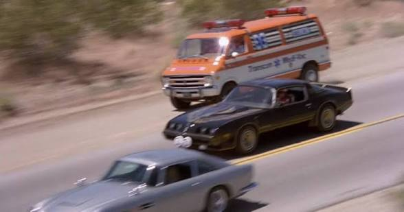

🤪💨THE CANNONBALL RUN (1981) — CERTIFIED MGC F-16

⚖️ MGC Lower Court Docket
- Asset Title: The Cannonball Run (1981) – The Saturated Star-Power Cross-Country Scramble
- Official Registry Grade: Certified MGC F-16 (Fine / Circulated Ensemble Alloy)
- Presiding: Judge Mina, Chief Grader MGC
- Case File: #059
📜 THE FORENSIC NARRATIVE BREAKDOWN & LUSTER LOG
The Presiding Judge drops the heavily circulated 1981 cross-country race planchet onto the dark-mode terminal. Under close calibration, the asset trades cohesive narrative depth for sheer star-power volume, flashing immense celebrity luster while carrying noticeable structural wear.
While the baseline script trades heavily in chaotic 1980s slapstick, the pure entertainment equity of Burt Reynolds, Dom DeLuise, Farrah Fawcett, Jackie Chan, and Dean Martin keeps the engine from seizing. It stands as a prime example of an asset whose heavy circulation marks and unstructured layout are rescued entirely by the sheer charisma of its high-grade ensemble cast.
🚨 The Three Specific Cross-Country & Tactical Planchet Flaws:
1. The Structural Sketch-Comedy Breakdown
- The overall plot lacks a disciplined linear trajectory, frequently fragmenting into a loose series of uncalibrated, chaotic comedy skits rather than a tight tactical race.
2. Under-Utilized Performance Capital
- Despite the historic strike depth of adding martial arts legend Jackie Chan to the coin, the script boxes his character into primitive gadget gimmicks, creating a noticeable friction blemish on his cinematic luster.
3. Heavy Outtake Luster Reliance
- The reverse of the coin relies too heavily on its iconic blooper reel end-credits to solidify its positive legacy, proving that the actual narrative metallurgy on the track couldn’t completely sustain itself without those behind-the-scenes shortcuts.
⚖️ FINAL COURT DECREE
- While the chaotic pacing and fragmented script cuts prevent this coin from ever touching the VF vaults, the unmatched star power and relentless camp value keep it rolling strong. It safely avoids dropping into the Good (G) or Poor (PO-1) basement junk boxes and anchors itself firmly on the ledger as a highly collectible piece of high-octane 1981 nostalgia.
- 🔨💥
 Case Closed.
Case Closed.
Permanently sealed in the archives as a Certified MGC F-16 Choice Circulated Specimen.🤪💨🏎️🇺🇸🎬

• © 2026 MOVIE GRADING CONSENSUS. All Sovereign Rights Reserved.